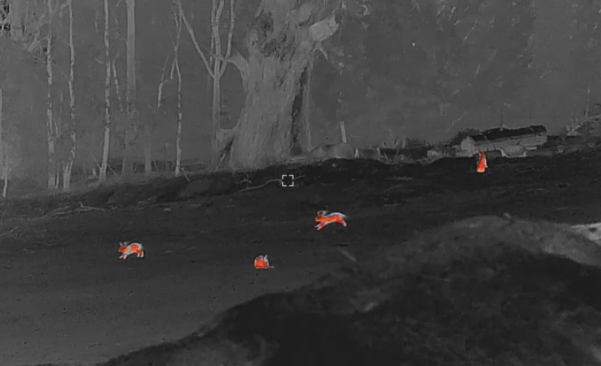

Our Services
Targeted vertebrate pest animal control
Professional, humane and discreet control solutions tailored to the species, site, surrounding environment and management objectives of each client.
Feral Pigeon Control
Feral pigeons are highly adaptable and commonly establish populations around commercial buildings, warehouses, agricultural facilities, wineries, sheds, rooftops, solar panels and residential properties.
Large or persistent populations can create significant problems through the accumulation of droppings, contamination of feed and water, nesting material, blocked gutters, damage to infrastructure and increased cleaning and maintenance requirements.
FEMS provides targeted feral pigeon control tailored to the site, population size and behaviour of the birds. Where appropriate, thermal imaging and night-vision technology may be used to locate roosting birds and undertake targeted operations with reduced disturbance.
Learn more about feral pigeons →Rabbit & Hare Control
European rabbits and hares can create significant agricultural and environmental impacts through grazing, browsing, digging and disturbance of soils.
FEMS provides targeted rabbit and hare control for rural properties, vineyards, conservation areas, commercial sites and other locations where populations are affecting vegetation, agriculture or property values.
Learn more about European rabbits →Learn more about European hares →
Fox Control
The European red fox is one of Australia's most damaging introduced predators. Foxes prey on native mammals, birds, reptiles and other wildlife, and can also cause direct losses to poultry, lambs and other livestock.
FEMS provides discreet fox control for rural properties, vineyards, conservation areas and other locations where fox activity is causing concern.
Learn more about red foxes →Deer Management
Introduced deer can create substantial environmental and agricultural impacts where numbers increase, including browsing and trampling of vegetation, damage to crops and pasture, soil disturbance and damage to fencing and revegetation projects.
FEMS provides targeted deer management for properties where deer populations are affecting agriculture, biodiversity, vegetation, infrastructure or other land-management objectives.
Learn more about feral deer →Other Vertebrate Pest Control
Not every pest animal issue fits neatly within the main service categories. FEMS can assess other vertebrate pest animal problems on a case-by-case basis and discuss whether targeted control is appropriate for the species, location and circumstances involved.
Discuss your requirements
Tell us about the species, property and impacts you are experiencing.
Make an EnquiryField Capability
Specialist equipment. Site-specific operations.
Thermal imaging and specialist optics can assist with detecting and assessing pest animals during low-light and night operations.
